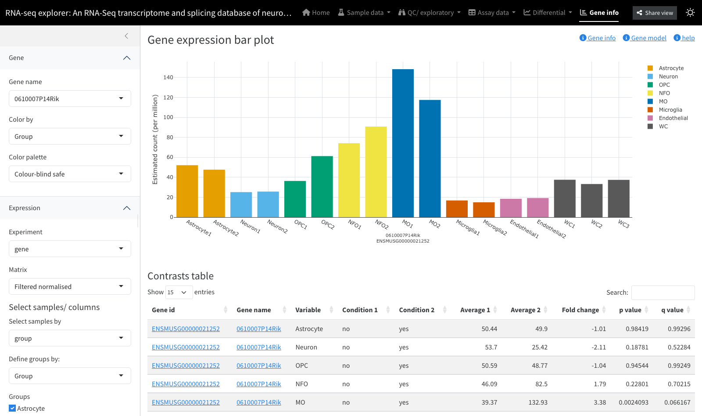

Getting started with shinyngs
Jonathan Manning
2026-07-19
Source:vignettes/shinyngs.Rmd
shinyngs.RmdWhat is shinyngs?
shinyngs turns the results of an RNA-seq (or similar
matrix-based) analysis into an interactive Shiny application for
exploration and mining: PCA, heatmaps, boxplots, clustering,
differential views (volcano/MA), gene pages, gene-set enrichment and
more. Its inputs are an extension of the Bioconductor
SummarizedExperiment format called
ExploratorySummarizedExperiment, and its individual
plotting components can also be used on their own, outside any app.

Installation
# install.packages("devtools")
devtools::install_github("pinin4fjords/shinyngs")shinyngs builds on SummarizedExperiment
(Bioconductor) and needs a recent version of R.
A five-minute app
The quickest path is to wrap an existing
SummarizedExperiment as an
ExploratorySummarizedExperiment, collect it into an
ExploratorySummarizedExperimentList (which represents a
whole study), and hand it to prepareApp().
library(shinyngs)
data(airway, package = "airway")
ese <- as(airway, "ExploratorySummarizedExperiment")
eselist <- ExploratorySummarizedExperimentList(
ese,
title = "airway",
group_vars = c("cell", "dex")
)
app <- prepareApp("rnaseq", eselist)
shiny::shinyApp(ui = app$ui, server = app$server)prepareApp() produces the ui and
server to pass to Shiny. Single-panel apps are built the
same way, e.g. prepareApp("heatmap", eselist) or
prepareApp("pca", eselist).
The zhangneurons dataset gives a fuller, pre-configured
example that also carries differential results and gene sets:
devtools::install_github("pinin4fjords/zhangneurons")
data("zhangneurons")
app <- prepareApp("rnaseq", zhangneurons)
shiny::shinyApp(app$ui, app$server)Where next
| To… | See |
|---|---|
| Build the input objects from your own matrices, metadata, contrasts and gene sets | The data model |
| Drive an app from files or a YAML config | Building an app from files |
Use the command-line scripts (make_app_from_files.R,
…) |
CLI reference |
| See every analysis panel and what it needs | Module and panel catalogue |
| Call the plotting functions from a report or your own app | Reusing components |
| Theme the app, change palettes, share views | Theming and shareable views |
| Extend the package with a new module | Developer guide |
Session information
sessionInfo()
#> R version 4.4.0 (2024-04-24)
#> Platform: x86_64-pc-linux-gnu
#> Running under: Ubuntu 24.04.4 LTS
#>
#> Matrix products: default
#> BLAS: /usr/lib/x86_64-linux-gnu/openblas-pthread/libblas.so.3
#> LAPACK: /usr/lib/x86_64-linux-gnu/openblas-pthread/libopenblasp-r0.3.26.so; LAPACK version 3.12.0
#>
#> locale:
#> [1] LC_CTYPE=C.UTF-8 LC_NUMERIC=C LC_TIME=C.UTF-8
#> [4] LC_COLLATE=C.UTF-8 LC_MONETARY=C.UTF-8 LC_MESSAGES=C.UTF-8
#> [7] LC_PAPER=C.UTF-8 LC_NAME=C LC_ADDRESS=C
#> [10] LC_TELEPHONE=C LC_MEASUREMENT=C.UTF-8 LC_IDENTIFICATION=C
#>
#> time zone: UTC
#> tzcode source: system (glibc)
#>
#> attached base packages:
#> [1] stats graphics grDevices utils datasets methods base
#>
#> other attached packages:
#> [1] BiocStyle_2.34.0
#>
#> loaded via a namespace (and not attached):
#> [1] digest_0.6.39 desc_1.4.3 R6_2.6.1
#> [4] bookdown_0.47 fastmap_1.2.0 xfun_0.60
#> [7] cachem_1.1.0 knitr_1.51 htmltools_0.5.9
#> [10] rmarkdown_2.31 lifecycle_1.0.5 cli_3.6.6
#> [13] sass_0.4.10 pkgdown_2.2.1 textshaping_1.0.5
#> [16] jquerylib_0.1.4 systemfonts_1.3.2 compiler_4.4.0
#> [19] tools_4.4.0 ragg_1.5.2 bslib_0.11.0
#> [22] evaluate_1.0.5 yaml_2.3.12 BiocManager_1.30.27
#> [25] otel_0.2.0 jsonlite_2.0.0 rlang_1.3.0
#> [28] fs_2.1.0 htmlwidgets_1.6.4